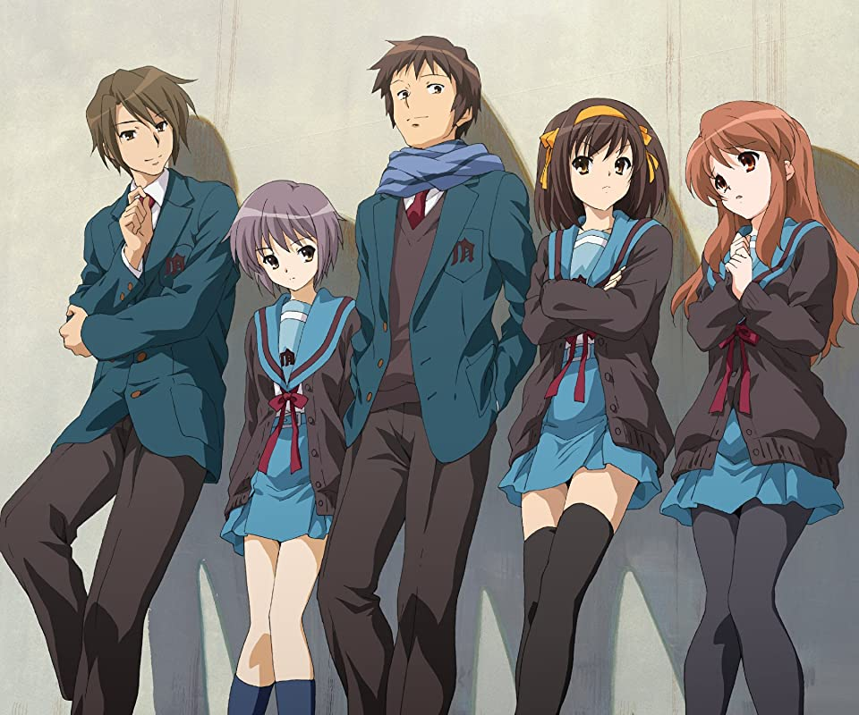

涼宮ハルヒの憂鬱
あらすじ
高校入学早々、この突飛な自己紹介をした涼宮ハルヒ。美少女なのだが、その性格・言動は変人そのものであり、
クラスの中で孤立していた。しかし、そんなハルヒに好奇心で話しかけた「ただの人間」である、キョンとだけは
会話をするようになる。ゴールデンウィークも過ぎたある日、校内に自分が楽しめる部活がないことを嘆いていた
ハルヒは、キョンの発言をきっかけに自分で新しい部活を作ることを思いつく。キョンを引き連れて文芸部部室を占領し、
また、唯一の文芸部員であった長門有希を巻き込み、メイド兼マスコットとして上級生の朝比奈みくるを「任意同行」と
称し拉致。さらに5月という中途半端な時期に転校してきたという理由で古泉一樹を加入させ、「宇宙人や未来人や超能力者
を探し出して一緒に遊ぶこと」を目的とした新クラブ「SOS団」を発足させる。
